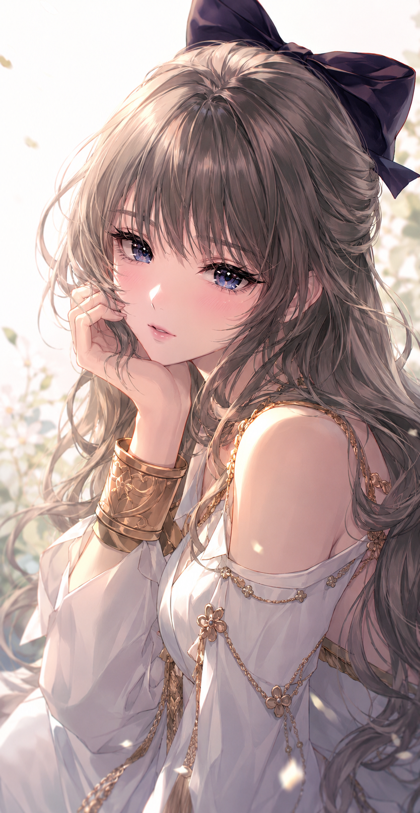

← Archive
0026
Positive Prompt
(masterpiece), (best quality), (ultra detailed), highly detailed anime portrait, beautiful young woman, delicate feminine face, glossy soft eyes, subtle blush, soft glossy lips, calm dreamy expression, looking at viewer, close-up composition, long hair, silky detailed hair strands, soft flowing curls, hand resting near face, refined feminine pose, off-shoulder fashion, elegant modern outfit, soft fabric folds, luxurious feminine aesthetic, subtle romantic mood, soft cinematic lighting, glowing skin highlights, watercolor-like shading, painterly anime rendering, thin clean lineart, delicate eyelashes, highly rendered eyes, soft gradients, airy composition, clean minimal background, pixiv featured artwork, professional Japanese illustrator aesthetic, modern anime illustration style, Korean webtoon vibe, light novel cover art, sakimichan-level rendering, toi8 inspired color harmony, delicate painterly highlights, refined shadow transitions, premium gacha game illustration style, trending on pixiv, artstation quality, visually polished illustration
Negative Prompt
negative prompt: (low quality, blurry, bad anatomy, extra fingers, extra limbs, malformed hands, poorly drawn face, duplicated features, rough sketch, flat colors, watermark, logo, text, jpeg artifacts, realistic photo, 3d rendering)
Positive Prompt (masterpiece), (best quality), (ultra detailed), highly detailed anime portrait, beautiful young woman, delicate feminine face, glossy soft eyes, subtle blush, soft glossy lips, calm dreamy expression, looking at viewer, close-up composition, long hair, silky detailed hair strands, soft flowing curls, hand resting near face, refined feminine pose, off-shoulder fashion, elegant modern outfit, soft fabric folds, luxurious feminine aesthetic, subtle romantic mood, soft cinematic lighting, glowing skin highlights, watercolor-like shading, painterly anime rendering, thin clean lineart, delicate eyelashes, highly rendered eyes, soft gradients, airy composition, clean minimal background, pixiv featured artwork, professional Japanese illustrator aesthetic, modern anime illustration style, Korean webtoon vibe, light novel cover art, sakimichan-level rendering, toi8 inspired color harmony, delicate painterly highlights, refined shadow transitions, premium gacha game illustration style, trending on pixiv, artstation quality, visually polished illustration Negative Prompt negative prompt: (low quality, blurry, bad anatomy, extra fingers, extra limbs, malformed hands, poorly drawn face, duplicated features, rough sketch, flat colors, watermark, logo, text, jpeg artifacts, realistic photo, 3d rendering)